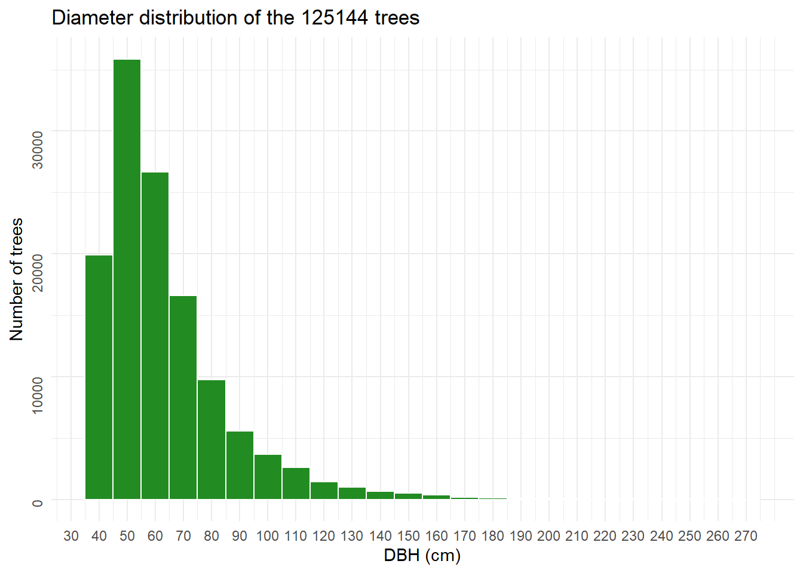

3 Merging IF100 + logbook data
3.1 Introduction
This script merges data from Commercial Forest Inventories (IF100) and logbooks. The objective is to enrich the IF100 tables with information from the logbooks on log volumes measured after tree felling.
IF100 and logbook data were obtained from Ibama and the Brazilian Forest Service. For each Annual Production Unit (APU), there is one XLS (or XLSX) file containing IF100 data and one XLS (or XLSX) file containing the corresponding logbook records.
3.2 Setup
3.3 IF100 and logbooks information
3.3.1 IF100
IF100 are commercial forest inventories carried out one year before exploitation. All commercial species trees with DBH above 40 cm have their diameter and commercial height estimated. Species are also identified by a parataxonomist.
The diameter is measured by wrapping a diameter tape around the tree trunk at a height of 1.3 meters above the ground. Trees with buttresses or other irregularities in the trunk have their diameter measured just above the buttress, or estimated based on the projection of a regular trunk section at 1.3 meters above the ground.
Commercial height is measured by visual estimation, aiming to determine the height between the ground and the first branching of the trunk.
Species identification is carried out by a trained parataxonomist, based on prior botanical identification of the most common species present in the forest.
Except for one APU, all trees in the IF100 dataset have a pair of geographic coordinates (long/lat).
IF100 tables have also a categoria column, indicating whether the tree is a Remanescente (will remain in the area), a Explorar (selected for harvesting) or a Substituta (can be harvested if the Explorar tree can’t be cut).
More information about IF100 procedures can be found in the Sustainable Forest Management Plan approved by IBAMA for Madeflona’s Forest Concession (https://www.gov.br/florestal/pt-br/assuntos/concessoes-e-monitoramento/concessoes-florestais-em-andamento/floresta-nacional-do-jamari-ro-2/floresta-nacional-do-jamari-ro-1).
IF100 and logbook data from all Forest Concessions were gathered by Oliveira, Santos, and Chaves (2024).
3.3.2 Logbook
After the trees are felled, their stems are sectioned and skidded to the log yard. At the yard, the volume of each log section is estimated using the Smalian method. For this purpose, two diameter measurements are taken at the base and two at the top of each log section, in addition to its length. Each tree has a unique identification code, and each log section from the same tree is assigned a letter code (A, B, C, and so on). All measurements are recorded in the logbook (romaneio).
3.3.3 Loading IF100
We will use complete IF100 from Madeflona, then subset it to the APUs studied in this project.
Column DAP is in meters, so we will multiply it by 100 to convert to cm.
Code
if100_madeflona <- read_excel("data/if100/2022_MADEFLONA_Por árvore_Alvaro.xlsx")
upas_selecionadas <- read.csv("data/if100/lista_upas_pesquisa.csv")
if100_upas <- if100_madeflona %>%
tidyr::separate(UMF,
into = c("flona", "umf"),
sep = " ",
remove = FALSE) %>%
filter(flona == "JAMARI") %>%
mutate(DAP = (CAP / pi ) * 100) %>%
mutate(flona = str_to_title(flona)) %>%
rename(num_arvore = Árvore) %>%
mutate(umf = as.numeric(umf)) %>%
rename(upa = UPA) %>%
mutate(upa = as.numeric(sub("UPA",
"",
upa))) %>%
semi_join(upas_selecionadas,
by = c("umf", "upa"))We will harmonize scientific names using ‘check_names’ function of the florabr package. check_names need input names So we will remove any “cf.” from the names, and also any words in parentheses. Then we will extract only genus and epithet (with get_binomial). Some species can’t be corrected with check_names. We will have to correct them mannualy.
Code
###########################################################################################
# Clean scientific names:
# 1. Remove "cf."
# 2. Remove anything under parentheses.
if100_upas$nome_corrigido <- trimws(
gsub("\\s*cf\\.\\s*|\\([^)]*\\)",
" ",
if100_upas$`Nome científico`,
ignore.case = T
)
)
# Get the binomial name (epithet + genus)
if100_upas$nome_corrigido <- get_binomial(if100_upas$nome_corrigido)
if (!file.exists("data/taxo/if100_florabr_taxo.rds")) {
# Check names with florabr
floraBR <- load_florabr("C:/Gustavo/Doutorado/Dados/Taxo_databases/florabr")
res_florabr <- check_names(data = floraBR,
max_distance = 0.1,
species = if100_upas$nome_corrigido,
parallel = T,
ncores = 12,
progress_bar = T
)
# Resolve some species mannualy
write.csv(res_florabr$input_name[res_florabr$Spelling == "Not_found"],
file = "data/taxo/manually_corrected_species_if100.csv")
# Hymenaea capanema
# https://repositorio.ufms.br/bitstream/123456789/2579/1/LUCAS%20TJHIO%20CESAR%20PESTANA.pdf
res_florabr$acceptedName[res_florabr$input_name == "Hymenaea capanema"] <- "Hymenaea courbaril"
# Pouteria pachycarpa
# https://lpf.florestal.gov.br/pt-br/?option=com_madeirasbrasileiras&view=especieestudada&especieestudadaid=206
res_florabr$acceptedName[res_florabr$input_name == "Pouteria pachycarpa"] <- "Chrysophyllum lucentifolium"
# Peltogyne pophyrocardia
# https://www.scielo.br/j/aa/a/94Ch8c533SxxM9mZzNvvKFx/?format=pdf&lang=pt
res_florabr$acceptedName[res_florabr$input_name == "Peltogyne pophyrocardia"] <- "Peltogyne porphyrocardia"
# Planchonella pachycarpa
# https://reflora.jbrj.gov.br/reflora/herbarioVirtual/ConsultaPublicoHVUC/ConsultaPublicoHVUC.do?idTestemunho=5524739
res_florabr$acceptedName[res_florabr$input_name == "Planchonella pachycarpa"] <- "Planchonella pachycarpa"
# A identificar
# Non identified species
res_florabr$acceptedName[res_florabr$input_name == "A identificar"] <- "NI"
saveRDS(res_florabr, "data/taxo/if100_florabr_taxo.rds")
} else {
res_florabr <- readRDS("data/taxo/if100_florabr_taxo.rds")
}
res_florabr_unique <- res_florabr %>%
distinct(input_name, .keep_all = TRUE)
if100_upas <- if100_upas %>%
left_join(
res_florabr_unique %>%
select(input_name, acceptedName),
by = c("nome_corrigido" = "input_name")
) %>%
mutate(
nome_florabr = case_when(
# keep name when second word is "sp.", since florabr assign a random name in these cases
str_detect(nome_corrigido, "^\\S+\\s+sp\\.$") ~ nome_corrigido,
TRUE ~ acceptedName
)
) %>%
select(-acceptedName)
###########################################################################################
#
# res_taxo <- correctTaxo(if100_upas$`Nome científico`,
# useCache = F)
#
# if100_upas$nome_corrigido <- paste(res_taxo$genusCorrected,
# res_taxo$speciesCorrected)
###########################################################################################
# if (!file.exists("data/taxo/worldflora_taxo.rds")) {
# WFO.remember()
# res_wflora <- WorldFlora:::WFO.match(spec.data = if100_upas$`Nome científico`,
# WFO.data = WFO.data,
# counter = 10000,
# verbose = T)
# saveRDS(res_wflora, "data/taxo/worldflora_taxo.rds")
# } else {
# res_wflora <- readRDS("data/taxo/worldflora_taxo.rds")
# }
sp <- read.csv("data/taxo/manually_corrected_species_if100.csv",
stringsAsFactors = FALSE)
text <- {
species <- sp$x
species <- species[!is.na(species)]
if (length(species) > 0) {
paste(
"Species corrected manually (n =",
length(species),
"):",
paste(species, collapse = ", ")
)
} else {
"No species required manual correction."
}
}Species corrected manually (n = 5 ): Hymenaea capanema, Pouteria pachycarpa, Peltogyne pophyrocardia, Planchonella pachycarpa, A identificar
3.3.4 Loading Logbooks
We already have our study areas logbooks. As we are interested only in the log total volume information from the logbook, we will sum up the sections volumes of the same tree. Some trees have tora, that is the main trunk, and also have toretes, which are branches big enough to have commercial value, or segments of the trunk after the first bifurcation.
Code
`summarise()` has grouped output by 'codigo', 'num_arvore'. You can override
using the `.groups` argument.Code
vol_wide <- romaneio_voltotal %>%
tidyr::pivot_wider(names_from = produto,
values_from = Volume,
values_fill = 0)
df_final <- vol_wide %>%
mutate(id_arvore = paste(codigo,
num_arvore)) %>%
mutate(
comprim_torete = ifelse(Tora == 0,
comprimento,
NA),
comprimento = ifelse(Torete == 0,
comprimento,
NA)
) %>%
group_by(codigo,
num_arvore) %>%
summarise(
vol_tora = sum(Tora,
na.rm = TRUE),
vol_torete = sum(Torete,
na.rm = TRUE),
arvore = sum(Árvore,
na.rm = TRUE),
comprim_tora = mean(comprimento,
na.rm = TRUE),
comprim_torete = mean(comprim_torete,
na.rm = TRUE),
.groups = "drop"
)3.4 Merging IF100 and logbook tables
We will use the tree unique identifier to merge data from the different datasets.
Let’s take a look at the data.
Code
ggplot(if100_com_romaneio,
aes(x = DAP)) +
geom_histogram(
binwidth = 10,
fill = "forestgreen",
color = "white"
)+
scale_x_continuous(
breaks = seq(0, max(if100_com_romaneio$DAP,
na.rm = TRUE),
by = 10)
) +
theme_minimal() +
theme(
axis.text.y = element_text(angle = 90)
) +
labs(
x = "DBH (cm)",
y = "Number of trees",
title = paste0("Diameter distribution of the ",
nrow(if100_com_romaneio),
" trees")
)
Code
ggplot(if100_com_romaneio,
aes(x = Altura)) +
geom_histogram(
binwidth = 5,
fill = "forestgreen",
color = "white"
)+
scale_x_continuous(
breaks = seq(0, max(if100_com_romaneio$Altura,
na.rm = TRUE),
by = 5)
) +
theme_minimal() +
theme(
axis.text.y = element_text(angle = 90)
) +
labs(
x = "Commercial height (m)",
y = "Number of trees",
title = paste0("Commercial height distribution of the ",
nrow(if100_com_romaneio),
" trees")
)
Code
if100_com_romaneio %>%
group_by(nome_florabr) %>%
summarise("Number of trees" = n(),
"Total volume (m³)" = sum(Volume),
.groups = "drop") %>%
arrange(desc(`Number of trees`)) %>%
slice_head(n = 15) %>%
kbl(
caption = "Top 15 species with more individuals",
align = c("l",
"r")
) %>%
kable_classic(full_width = FALSE)| nome_florabr | Number of trees | Total volume (m³) |
|---|---|---|
| Peltogyne lecointei | 12913 | 35348.940 |
| NI | 12024 | 31615.093 |
| Tachigali paniculata | 6236 | 19508.294 |
| Clarisia racemosa | 5036 | 14362.124 |
| Astronium lecointei | 4125 | 21250.972 |
| Couratari guianensis | 3214 | 23421.251 |
| Hymenolobium excelsum | 2840 | 15588.518 |
| Dinizia excelsa | 2625 | 30746.081 |
| Brosimum rubescens | 2586 | 9896.106 |
| Bertholletia excelsa | 2548 | 34877.206 |
| Allantoma lineata | 2393 | 13455.234 |
| Parkia decussata | 2295 | 6041.836 |
| Copaifera multijuga | 2012 | 4473.362 |
| Caryocar glabrum | 1973 | 7738.574 |
| Copaifera duckei | 1951 | 5060.719 |